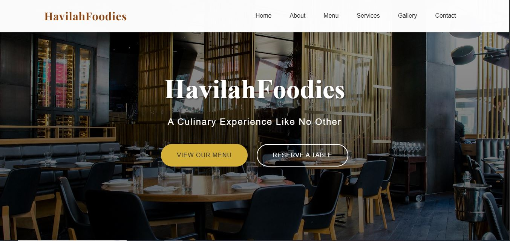
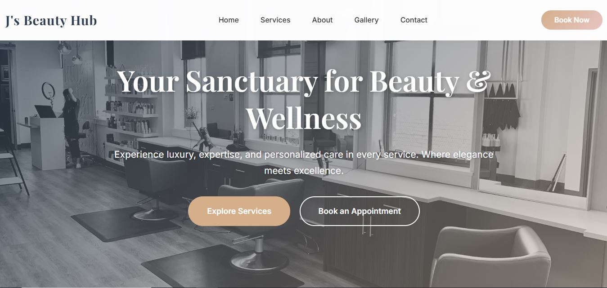
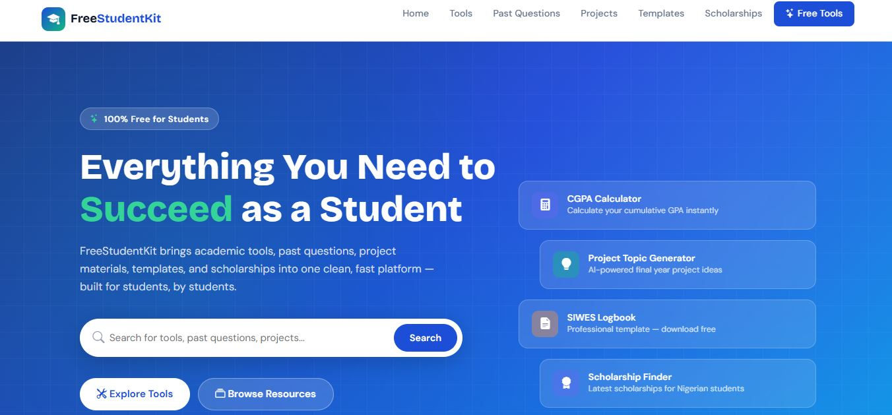
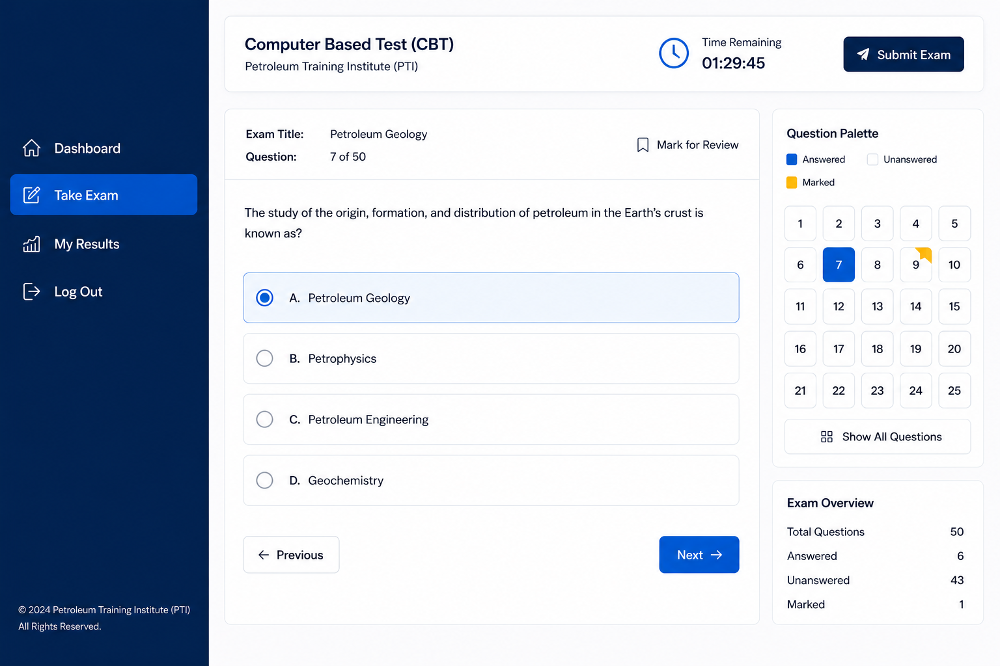
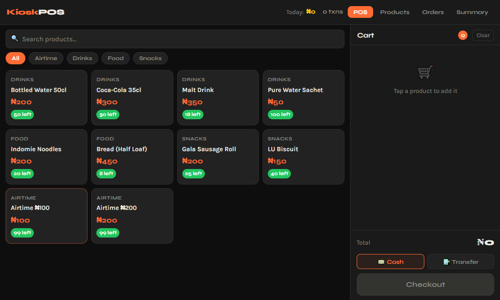

Website · Restaurant
Havilah Foodies Eatery
A website for a restaurant business, showcasing the menu and ambiance so customers can decide what to order before they arrive or reach out.
View Live SiteWebsites for real businesses, and web applications built to run part of how an organisation actually operates. Everything here is a live or verifiable project — nothing on this page is a placeholder.
Business, e-commerce and content websites built to represent a brand and bring in enquiries.

A website for a restaurant business, showcasing the menu and ambiance so customers can decide what to order before they arrive or reach out.
View Live Site
A visual portfolio site for a Lagos-based beauty brand — clean, fast, and built to attract clients who are browsing before they book.
View Live Site
A mobile-first online store for a fashion brand, built so customers arrive already knowing what they want — cutting down time spent explaining products in person.
View Live Site
An online platform for students to access study materials and resources, organised for quick browsing on a phone.
View Live SiteA website for a custom luxury furniture and interiors business, letting the product photography and brand tone carry the site rather than a generic template layout.
View Live SiteSystems built to run part of a real workflow — not just present information.
A school platform built around a real academic workflow — a public admissions and information site, a result-checking tool, and login-gated portal concepts for students, parents, and staff.
View Live Site
A computer-based testing platform for an educational institution, handling secure examinations, automated grading, and real-time result processing through a student dashboard.
View Live Site
A point-of-sale system for a small kiosk business, replacing manual sales notebooks with proper daily tracking.
Private internal systemEvery project above started with a single conversation. Let's have yours — no pressure, no obligation.
Start a Conversation